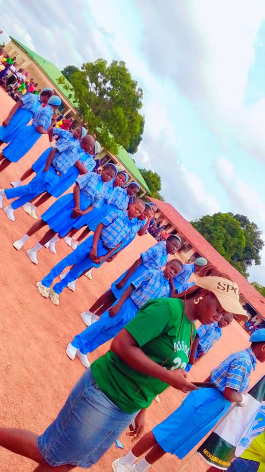
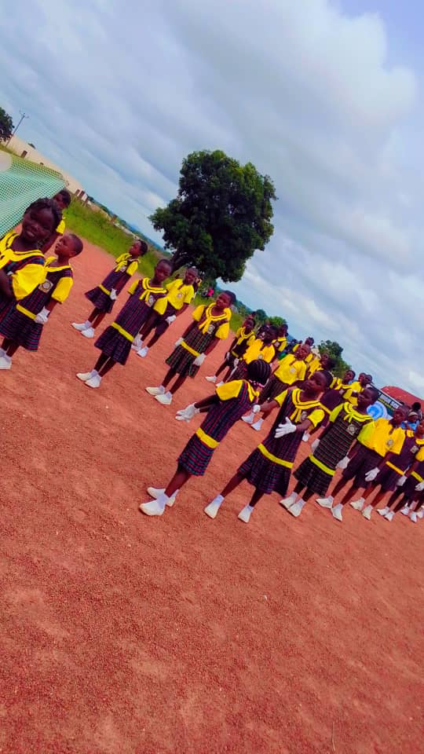

Quality Teaching
Engaging lessons designed to develop understanding, confidence and academic excellence.
WELCOME TO KERSON EDUCATION CENTER
We are committed to academic excellence, good character, creativity and preparing every learner for a successful future.

ABOUT OUR SCHOOL
KERSON Education Center, located in Atonko, Gboko, is committed to providing quality education in a supportive learning environment. We encourage academic achievement, discipline, creativity and respect for others.
Our goal is to help every learner develop the knowledge, skills and confidence needed to succeed in school and beyond.
LIFE AT KERSON
A glimpse into the learning, activities, and experiences that make KERSON Education Center special.


WHAT WE OFFER
Engaging lessons designed to develop understanding, confidence and academic excellence.
Building computer literacy and digital skills for today's world.
Encouraging discipline, responsibility, respect and good citizenship.
YOUR SCHOOL, CONNECTED
Access the appropriate portal for your school activities.
GET IN TOUCH
School: KERSON Education Center
Location: Atonko, Gboko, Benue State, Nigeria
For enquiries about admissions and school activities, please contact the school administration.